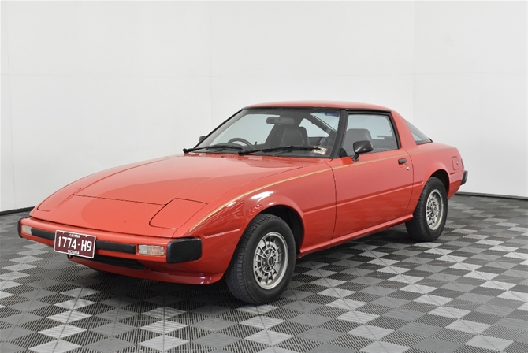
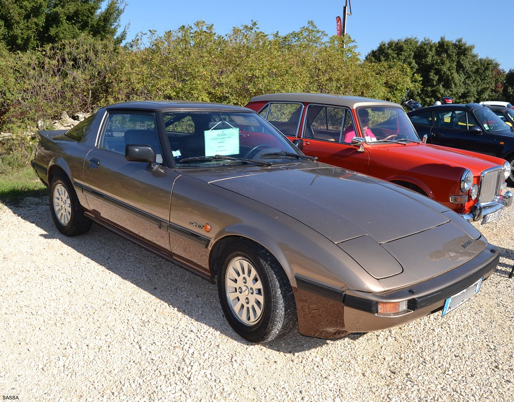
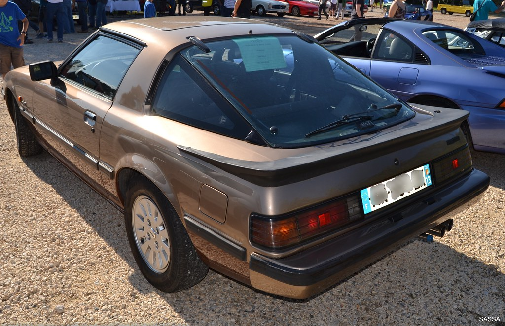
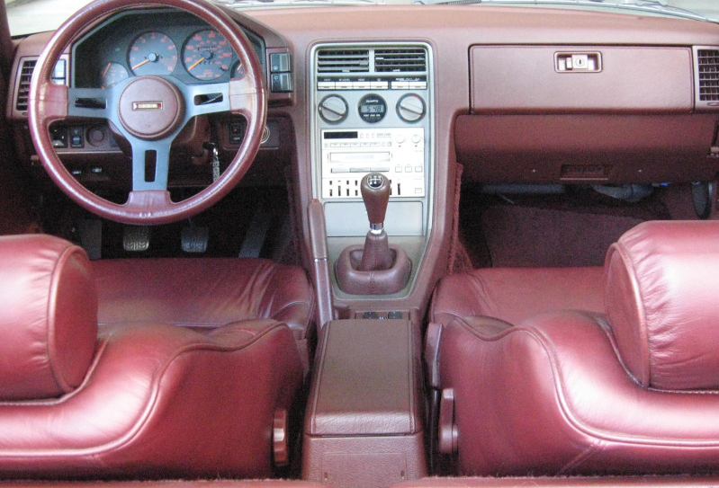

First Generation (SA22C-FB)
Series 1 (1978-1980)
Is commonly referred to as the "SA22C" from the first alphanumerics of the vehicle identification number. Mazda's internal project number for what was to become the RX-7 was X605. In Japan it was introduced in March 1978, replacing the Savanna RX-3, and joined Mazda's only other remaining rotary engine-powered products, called the Cosmo which was a two-door luxury coupé, and the Luce luxury sedan.
The lead designer at Mazda was Matasaburo Maeda (前田 又三郎, Maeda Matasaburō), whose son, Ikuo, would go on to design the Mazda2 and the RX-7's successor, the RX-8. The transition of the Savanna to a sports car appearance reflected products from other Japanese manufacturers. The advantage the RX-7 had was its minimal size and weight, and the compact rotary engine installed behind the front axle helped balance the front and rear weight distribution, which provided a low center of gravity.
In Japan, sales were enhanced by the fact that the RX-7 complied with the Japanese Government dimension regulations, and Japanese buyers were not liable for yearly taxes for driving a larger car. The rotary engine had financial advantages to Japanese consumers in that the engine displacement remained below 1,500 cc (1.5 L), a significant determination when paying the Japanese annual road tax; this kept the obligation affordable to most buyers while having more power than the traditional engines having a straight cylinder configuration.
In May 1980, Mazda introduced a limited production run of special North American models known as the Leathersport Models. This package was essentially an uprated GS model with added LS badges on each B-pillar, special stripes on the exterior, and LS-only gold anodized wheels (with polished outer face and wheel rim). All LS editions came equipped with special LS-only full brown leather upholstery, leather-wrapped steering wheel, leather-wrapped shift knob, removable sunroof, LS-specific four-speaker AM/FM stereo radio with power antenna (though listed as a six-speaker stereo, as the two rear dual voice coil speakers were counted as four speakers in total), remote power door side mirrors, and other standard GS equipment. Two primary options were also available; a three-speed JATCO 3N71B automatic transmission and air conditioning. Other GS options such as cassette tape deck, splash guards, padded center console arm rest and others could be added by the dealer. The LS model was only ever available in three different exterior colors: Aurora White, Brilliant Black, and Solar Gold. No official production records are known to exist or to have been released. This series of RX-7 had exposed steel bumpers and a high-mounted indentation-located rear license plate, called by Werner Buhrer of Road & Track magazine a "Baroque depression."
Series 2 (1981-1983)
The Series 2, referred to as the FB (produced from 1981 to 1983), had integrated plastic-covered bumpers, wide black rubber body side moldings, wraparound taillights and updated engine control components. While marginally longer overall, the new model was 135 lb (61 kg) lighter in federalized trim. The four-speed manual option was dropped for 1981 as well, while the gas tank grew larger and the dashboard was redesigned, including a shorter gear stick mounted closer to the driver.[3] In 1983, the 130 mph (209 km/h) speedometer returned for the RX-7. The GSL package provided optional four-wheel disc brakes, front ventilated (Australian model) and clutch-type rear limited-slip differential (LSD). This revision of the SA22 was known in North America as the "FB" after the US Department of Transportation mandated 17 digit Vehicle Identification Number changeover. For various other markets worldwide, the 1981–1985 RX-7 retained the 'SA22C' VIN prefix. In the UK, the 1978–1980 series 1 cars carried the SA code on the VIN but all later cars (1981–1983 series 2 and 1984–1985 series 3) carried the FB code and these first-generation RX-7s are known as the "FB" only in Northern America.
In Japan, a very well appointed version similar to the export market GSL arrived late in 1982, called the SE-Limited. This model received two-tone paint, alloy wheels shaped like the Wankel rotor, all-wheel disc brakes, limited-slip differential, and a full leather interior. It also had the latest iteration of the 12A rotary engine, the RE-6PI with variable induction port system and 140 PS (103 kW; 138 hp).
In Europe, the FB was mainly noticed for having received a power increase from the 105 PS (77 kW) of the SA22; the 1981 RX-7 now had 115 PS (85 kW) on tap. European market cars also received four-wheel disc brakes as standard.
Series 3 (1984-1985)
The Series 3 (produced 1984–1985) featured an updated lower front fascia. North American models received a different instrument cluster. GSL package was continued into this series, but Mazda introduced the GSL-SE sub-model. The GSL-SE had a fuel injected 1,308 cc (1.3 L) 13B RE-EGI engine rated at 135 hp (101 kW; 137 PS) and 133 lb⋅ft (180 N⋅m). GSL-SE models had much the same options as the GSL (clutch-type rear LSD and rear disc brakes), but the brake rotors were larger, allowing Mazda to use the more common lug nuts (versus bolts), and a new bolt pattern of 4x114.3mm (4x4.5"). Also, they had upgraded suspension with stiffer springs and shocks. The external oil cooler was reintroduced, after being dropped in the 1983 model-year for the controversial "beehive" water-oil heat exchanger.
The 1984 RX-7 GSL has an estimated 29 MPG (8.11 litres/100 km) highway/19 MPG (12.37 L/100 km) city. According to Mazda, its rotary engine, licensed by NSU-Wankel allowed the RX-7 GSL to accelerate from 0 to 80 km/h (50 mph) in 6.3 seconds.
In 1985, Mazda introduced the RX-7 Finale in Australia. This was the last of the series and brought out in limited numbers. The Finale featured power options and a brass plaque mentioning the number the car was as well as "Last of a legend" on the plaque. The finale had special stickers and a blacked out section between the window & rear hatch.
The handling and acceleration of the car were noted to be of a high caliber for its day.[citation needed] The RX-7 had "live axle" 4-link rear suspension with Watt's linkage, a 50:50 front and rear weight distribution, and weighed under 1,100 kg (2,425 lb). It was the lightest generation of the RX-7 ever produced. 12A-powered models accelerated from 0–97 km/h (60 mph) in 9.2 seconds, and turned 0.779 g (7.64 m/s²) laterally on a skidpad. The 1,146 cc (1.1 L) 12A engine was rated at 100 hp (75 kW; 101 PS) at 6,000 rpm in North American models, allowing the car to reach speeds of over 190 km/h (120 mph). Because of the smoothness inherent in the Wankel rotary engine, little vibration or harshness was experienced at high engine speeds, so a buzzer was fitted to the tachometer to warn the driver when the 7,000 rpm redline was approaching.
The 12A engine has a long thin shaped combustion chamber, having a large surface area in relation to its volume. Therefore, combustion is cool, giving few oxides of nitrogen. However, the combustion is also incomplete, so there are large amounts of partly burned hydrocarbons and carbon monoxide. The exhaust is hot enough for combustion of these to continue into the exhaust. An engine-driven pump supplies air into the exhaust to complete the burn of these chemicals. This is done in the "thermal reactor" chamber where the exhaust manifold would normally be on a conventional engine. Under certain conditions, the pump injects air into the thermal reactor and at other times air is pumped through injectors into the exhaust ports. This fresh air is needed for more efficient and cleaner-burning of the air/fuel mixture.
Options and models varied from country to country. The gauge layout and interior styling in the Series 3 was only changed for the North American models. Additionally, North America was the only market to have offered the first generation of the RX-7 with the fuel-injected 13B, model GSL-SE. Sales of the first-generation RX-7 were strong, with a total of 474,565 cars produced; 377,878 (nearly eighty percent) were sold in the United States alone.
Mazda Savanna RX-7 Turbo
Following the introduction of the first turbocharged rotary engine in the Luce/Cosmo, a similar, also fuel injected and non-intercooler 12A turbocharged engine was made available for the top-end model of the Series 3 RX-7 in Japan. It was introduced in September 1983. The engine was rated at 165 PS (121 kW) (JIS) at 6,500 rpm. While the peak power figures were only slightly higher than those of the engine used in the Luce/Cosmo, the new "Impact Turbo" was developed specifically to deal with the different exhaust gas characteristics of a rotary engine. Both rotor vanes of the turbine were remodeled and made smaller, and the turbine had a twenty percent higher speed than a turbo intended for a conventional engine. The Savanna Turbo was short-lived, as the next generation of the RX-7 was about to be introduced.
Next